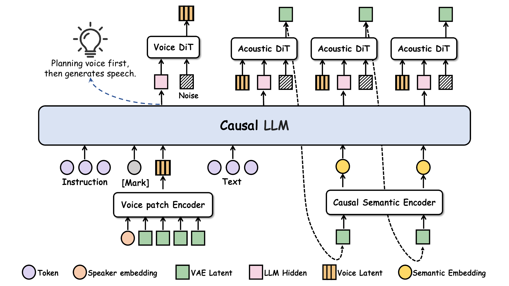

Interpret & design
The instruction prefix guides Voice DiT to sample a continuous voice latent before the synthesis text is processed.
VOICE-OF-THOUGHT SPEECH
Decoupling Voice Design from Speech Generation
in Instruction-Following TTS
1 Beijing University of Posts and Telecommunications 2 Hello Group Inc.
* Corresponding authors
01 / OVERVIEW
VoTSpeech separates what voice to create from what that voice says. A shared causal language model first interprets a natural-language instruction and guides a flow-based Voice DiT to predict an explicit, continuous voice representation. Speech generation is then conditioned on this designed voice.
Supervision combines speaker identity features with pooled audio VAE latents, capturing both identity and acoustic detail. With 1,543.52 hours of Chinese task-specific adaptation data, the model achieves the highest DSD and RP accuracy among the systems compared in the paper, alongside competitive intelligibility and strong subjective ratings.
02 / METHOD
A single backbone, with an explicit voice-design stage before synthesis.

The instruction prefix guides Voice DiT to sample a continuous voice latent before the synthesis text is processed.
The designed voice conditions the causal language model and Acoustic DiT, connecting semantic planning with acoustic rendering.
Prefix KV-cache reuse avoids repeated instruction encoding. The same sampled voice latent is reused throughout speech generation.
03 / RESULTS
VoTSpeech combines strong instruction-following accuracy with clear, expressive speech.
84.8%APS accuracy
77.3%DSD accuracy
66.5%RP accuracy
2.58%Character error rate
| Model | Objective evaluation | Subjective evaluation · 95% CI | |||||
|---|---|---|---|---|---|---|---|
| APS ↑ | DSD ↑ | RP ↑ | CER ↓ | Naturalness ↑ | Expressiveness ↑ | Adherence ↑ | |
| VoTSpeech (Ours) | 84.8 | 77.3 | 66.5 | 2.58 | 4.12 ± 0.22 | 4.30 ± 0.18 | 4.26 ± 0.19 |
| Ming-Omni-TTS-0.5B | 84.9 | 72.2 | 53.9 | 2.48 | 3.71 ± 0.27 | 3.71 ± 0.24 | 3.75 ± 0.25 |
| Qwen3-TTS-12Hz-1.7B-VD | 87.1 | 76.0 | 55.2 | 2.99 | 4.08 ± 0.21 | 4.10 ± 0.19 | 4.06 ± 0.20 |
| MOSS-VoiceGenerator | 73.1 | 70.2 | 58.9 | 5.03 | 3.86 ± 0.22 | 3.72 ± 0.18 | 3.70 ± 0.19 |
| VoxCPM2 | 84.7 | 71.8 | 56.8 | 2.58 | 3.80 ± 0.25 | 3.82 ± 0.18 | 3.82 ± 0.17 |
APS, DSD, RP and CER are percentages. Instruction accuracy follows InstructTTSEval-ZH with Gemini 2.5 Pro; CER uses Paraformer-ZH. Subjective ratings use a five-point scale from 24 listeners on 10 shared examples. Bold marks the best mean in each column.
04 / AUDIO SAMPLES
Choose a dataset and an example, then compare the same instruction across six systems. Chinese instructions are paired with English translations for reading; the displayed translations do not indicate English-conditioned generation. “Finetune” is the direct fine-tuning baseline (FT).
声音指令（中文） / CHINESE
VOICE INSTRUCTION / ENGLISH
生成文本 / SYNTHESIS TEXT
MODEL OUTPUTS
点击波形任意位置跳转 · 播放新音频会自动暂停上一条